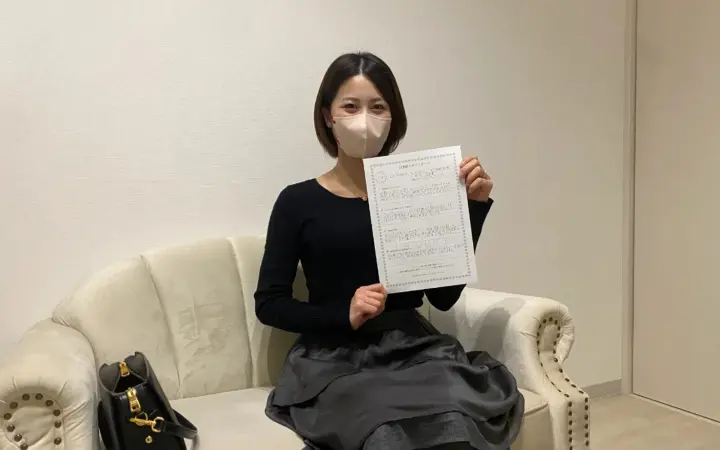
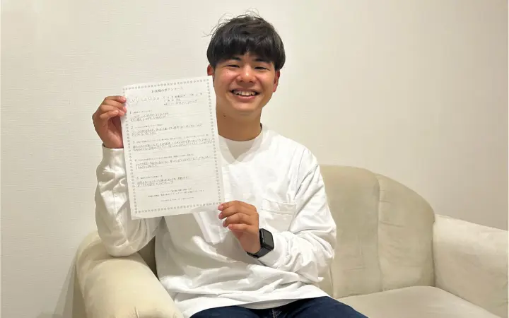
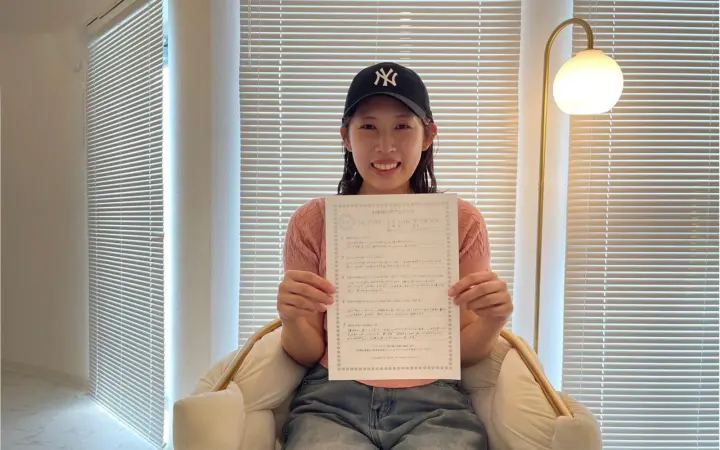
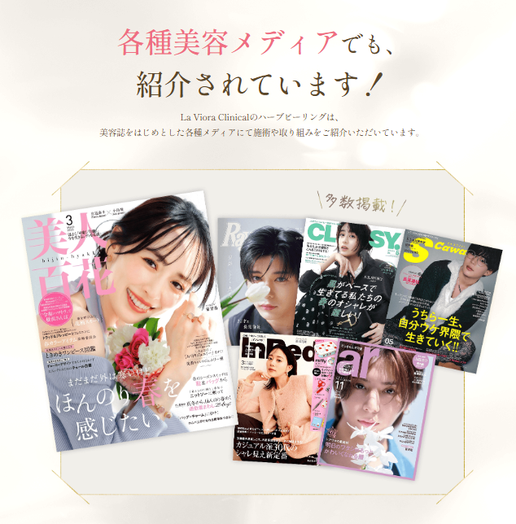

うるおい不足
肌を守る「バリア」が弱まる。
肌の一番外側にある角層は、水分を保ち、外からの刺激を防ぐ役割があります。乾燥や洗いすぎでこの働きが乱れると、カサつきや刺激を感じやすい状態に。
図は肌の仕組みを説明するイメージです。
ニキビ・ニキビ跡に悩む肌へ
自分に合う、ハーブピーリングという選択。
 施術前施術後
施術前施術後
 施術前施術後
施術前施術後
 施術前施術後
施術前施術後
 施術前施術後
施術前施術後
 施術前施術後
施術前施術後
 施術前施術後
施術前施術後
 施術前施術後
施術前施術後
横にスライドして見る
「施術後」は継続施術後の来店時の写真を含み、施術直後とは限りません。施術期間・回数は症例により異なり、変化には個人差があります。
こんなふうに、肌が気になる日。
何もしていないわけじゃない。
それでも迷うなら、次に買い足す前に。
今の肌に合うケアを、一緒に整理しませんか。
WHY / 肌荒れを繰り返す理由
肌荒れには、乾燥・摩擦・皮脂の詰まりなど、いくつもの要因が関わります。ケアを続けていても、肌に負担をかける要因が残っていると、繰り返すことがあります。
うるおい不足
肌の一番外側にある角層は、水分を保ち、外からの刺激を防ぐ役割があります。乾燥や洗いすぎでこの働きが乱れると、カサつきや刺激を感じやすい状態に。
図は肌の仕組みを説明するイメージです。
摩擦・ケアの刺激
何度も洗う、強くこする、新しいアイテムを次々に試す。こうした習慣や肌に合わない化粧品が刺激となり、赤みやヒリつきにつながることがあります。
皮脂・毛穴の詰まり
皮脂や古い角質などが毛穴に詰まると、ニキビができることがあります。そこに炎症が加わると、赤みのあるニキビに。ホルモンの変化も関わり、睡眠不足やストレスで悪化することもあります。
毎日のケアに、
肌を育てるサロンケアという選択を。
La Vioraのダイヤモンドハーブピーリング®は、その場の変化や一時的な手応えを目的とした施術ではありません。ニキビ・毛穴・くすみ・老化といった悩みの「原因」に向き合い、日常の中でも肌状態が安定しやすい土台づくりを目指します。
WHY LAVIORA / ハーブピーリングへのこだわり
ダイヤモンドハーブピーリング®が大切にしているのは、「呼び起こす・育てる・守り抜く」という考え方。ひとつの成分だけでなく、肌へのアプローチから施術後のケアまでをつなげています。
OUR VISION / 目指す肌

肌を育てる / CARE DESIGN
肌を「呼び起こす・育てる・守り抜く」という3段階の考え方で、改善に向かう流れをつくり、その状態を定着させて、さらにエイジングケアへつなげていく設計です。
呼び起こす物理的なアプローチ
弱っていた肌の再生力の源にアプローチし、トラブルが起きにくい土台へ向かう、最初の一歩をつくります。
使用素材：リブスピキュール™
育てる成分と施術の組み合わせ
生まれ変わり始めた肌に必要な要素を与え、肌の構造環境を育てていきます。
ImS：不死化ヒト歯髄幹細胞培養上清
守り抜く施術後の保護・保湿
外的要因に揺らぎにくい状態を目指し、定着からエイジングケアまでを一つの流れとしてつなげます。
施術後のケア成分：フラーレン・SOD・植物エキス・ヒアルロン酸・コラーゲン・ベタイン等
肌に合わせて選ぶ 4 TYPES
肌状態だけでなく、刺激への不安や翌日の予定も確認。商材・刺激の強さ・通い方を調整し、4つの施術タイプから、肌質管理士がその日の肌に合う内容をご提案します。
来店前に、ご自身でタイプを決める必要はありません。

肌を知る / COUNSELING
あなた専用累計5万件以上の施術実績をもとにした、La Vioraの肌診断システムで、生活習慣・肌状態・肌特性を分析。肌質管理士が普段のケア、刺激への不安、大切な予定まで伺い、施術を選ぶ理由もお伝えします。
COMPARE / 施術を選ぶときに
刺激への配慮から、成分・目指す変化まで。施術そのものの違いを、5つの視点で。
| 比較項目 | ダイヤモンド ハーブピーリング® |
一般的な ハーブピーリング |
|---|---|---|
| 刺激・剥離 への配慮 |
肌を見極め、刺激・剥離を抑えながら効果を引き出す施術を選択 | 剥離を伴うタイプと、剥離しにくいタイプがある |
| 日常生活 への配慮 |
翌日の予定や生活に合わせ、刺激の強さ・施術内容を調整 | 当日メイクできるものから、数日間の制限があるものまである |
| 施術の 選び方 |
肌診断をもとに4タイプから選び、肌ごとに強さをカスタマイズ | 1day・数日間のケアなど、ブランドごとのコースから選ぶ |
| 成分と アプローチ |
リブスピキュール™とImS等の成分、施術後の保護・保湿を一体で設計 | 天然ハーブのブレンドや植物由来成分など、各製品の処方でケア |
| 目指す 変化 |
「改善・定着・エイジングケア」を一連のゴールとして設計 | 角質ケア・肌質改善・エイジングケアなど、製品ごとの目的に沿う |
一般的なハーブピーリング欄は、複数の施術タイプの例を整理したものです。すべての製品・店舗に共通する特徴ではありません。刺激・剥離や変化には個人差があり、効果や剥離しないことを保証するものではありません。
「今日はやめておきましょう」も、提案のひとつ。
肌状態によっては施術を見送り、皮膚科への相談をおすすめする場合もあります。
帰宅後も、肌質管理士に365日相談できます。
洗顔・保湿・施術後の過ごし方まで、LINEで聞ける窓口があります。
使うものの情報も、施術前に確認できます。
創薬会社と共同開発した自社処方。製造・品質試験については、品質への取り組みをご覧ください。
REAL VOICES / お客様の声

20代・会社員
「肌に自信を持って、最高の結婚式を迎えられました」
結婚式を控え、以前から気になっていた毛穴のケアをきっかけに来店。毎回の写真比較についても感想を寄せています。
20代・看護師
「勧誘がないので、安心して通えました」
10代からニキビ・ニキビ跡に悩んでいた方の体験談。写真で比較することで、肌の変化を客観的に見られたと語っています。
20代・学生
「鏡を見るのが嫌じゃなくなりました」
人と会うときの不安や、すっぴんで過ごすときの気持ち。肌だけでなく、日常の変化も紹介されています。

20代・学生
「迷っているなら、一度受けてみてほしいと思いました」
ニキビ・ニキビ跡や毛穴が気になって来店。周囲から声をかけられるようになり、スキンケアも楽しくなったと語っています。

20代・学生
「毎回写真で比較してくれるので、変化を実感しやすいです」
予定の前の肌荒れや、メイク時に気になるニキビ跡が来店のきっかけ。家族からの言葉や行事を楽しむ気持ちについても語っています。
横にスライドして見る
公式サイトの体験談から見出しを抜粋し、内容を要約しています。個人の感想であり、効果を保証するものではありません。施術例写真とは別のお客様です。

RETURN VISITS / 再来店
リピート率88%
全店舗累計施術実績 50,000件以上
施術実績は全店舗の累計施術回数です。リピート率は、2025年〜2026年7月の実績をもとに、再来店された方の割合を自社基準で算出した値です。2026年9月14日時点。
REVIEWS & SALONS / 選ぶための判断材料
口コミ 5,000件以上
口コミ 2,300件
HOT PEPPER Beauty AWARD

ハーブピーリング専門店・全国28店舗
※2026年9月現在。オープン準備中の店舗を含みます。
THE EXPERIENCE / 店内・スタッフ

肌の悩みも、すっぴんも。人目を気にせず過ごせるように、来店から退店までを設計しています。
他のお客様と一緒に待つ時間はありません。
周囲を気にせず、肌のことを話せます。
最後まで、他のお客様と顔を合わせずに。
SALON STAFF / スタッフ
ビューティーエリート
アカデミーBeautyElite Academy Japan
肌質管理士コース
通過率3％
施術前だけでなく、施術中に感じた刺激や不安もお伝えください。担当スタッフは店舗により異なります。


QUALITY / 品質への取り組み
国際特許取得成分「不死化ヒト歯髄幹細胞培養上清（ImS）」を使用。
使用する製品は国内で製造。
界面活性剤・パラベン・アルコール等を使用しない設計。
重金属・ヒ素・無菌試験等の結果を、ご希望の方に開示。
THE TREATMENT JOURNEY / 施術の流れ

STEP 1
今までのケアや不安、大切な予定まで。肌質管理士が伺います。
STEP 2
肌状態と生活習慣などを分析し、施術を選ぶ理由をご説明します。

STEP 3
メイクや汚れを落とし、施術の準備を整えます。

STEP 4
4つのタイプから選んだ内容で、肌状態と刺激の感じ方を確認しながら施術します。

STEP 5
ダイヤモンドジェルパックで、施術後の肌を整えます。

STEP 6
ダイヤモンドリペアクリームで保湿し、仕上げます。

STEP 7
写真で肌状態を確認し、自宅でのケアと当日の過ごし方をご案内します。
各工程・所要時間は目安です。肌状態や施術内容により変わる場合があります。
FIRST EXPERIENCE
完全都度払い・コース契約・回数券なし
2回目以降1箇所 11,800円（税込）
部位を追加する場合1箇所につき ＋5,000円（税込）
フェイス、首・デコルテ、二の腕、背中上部、背中下部から選べます。
※赤み・違和感・角片等が生じる場合があります。感じ方や変化には個人差があります。
FIRST VISIT GUIDE / 初めての方へ
まずは自分の肌に合うか、確かめたい。その気持ちを大切に、契約への不安も、帰宅後の迷いも相談できる仕組みを整えています。
何回も通う契約が必要ですか？
1回ごとに内容と料金を確認し、次も受けるかをご自身で決められます。
勧誘や営業をされませんか？
必要な施術をご案内しますが、その場で次回予約や契約を決める必要はありません。
帰宅後も相談できますか？
施術後の肌の状態や、自宅でのケア、次回来店までの過ごし方を相談できます。
赤みや違和感など気になることがあれば、丁寧に対応します。
友だち追加後すぐ確認。相談・予約は、納得してからで大丈夫です。
HOW TO START / LINEでの確認方法
初回（1箇所）を5,800円で受けられるクーポンです（通常7,800円）。
希望する店舗の空き枠や施術内容を確認。気になることは肌質管理士に聞けます。
予約するかどうかは、そのときのあなたが決められます。
QUESTIONS / よくある質問
はい、ご安心ください。 La Viora Clinicalでは、初めての方にも安心してお過ごしいただけるよう、施術前に丁寧なカウンセリングを行い、お肌の状態やお悩みに合わせてご提案いたします。内容をご説明し、ご納得いただいたうえで施術を行いますので、不安な点はその場で何でもご相談ください。
また、お持ち物は特に必要なく、メイクをしたままご来店いただけます。 施術前に当店で専用のクレンジング・洗顔を行い、お肌を最適な状態へ整えてから施術に入りますので、初めての方でも安心してお越しいただけます。
施術中にピリつきを感じたり、施術後に赤み・違和感・角片等が生じる場合があります。感じ方には個人差があるため、大切な予定がある方は事前にお知らせください。
肌のターンオーバー周期に合わせ、改善期は2〜4週間に1回のペースでの施術がおすすめです。 その後は肌状態に合わせて、2〜4ヶ月に1度のメンテナンスなどをご提案します。頻度や回数は一人ひとり異なります。
完全都度払い制のサロンです。 無理な勧誘やコース契約は行っておらず、都度、ご自身のタイミングでご利用いただけます。施術料金以外の追加費用はかからず、施術に付随する商品の販売も行っていません。La Viora Clinicalでは、無理な販売ではなく、施術そのものにご納得いただくことを大切にしています。
お支払いは、現金・クレジットカード・交通系IC・iD・QUICPayに対応しています（※PayPayはご利用いただけません）。また、転勤やお引越しの際には、全国の店舗へ移動して通っていただくことが可能で、手数料などは発生しません。
ダイヤモンドハーブピーリング®は、剥離や強いダウンタイムを前提とした施術ではございません。 そのため、施術前後に日常生活を大きく制限していただく必要はなく、特別なご準備も不要です。 また、施術直後からメイク・スキンケアともに可能でございます。 サロンにはドレッサー・ドライヤー・ヘアアイロンをご用意しておりますので、ゆっくりとお支度いただけます。 なお、施術当日はサウナや長時間の入浴など、体を過度に温める行為はお控えください。また、同日の脱毛施術もお控えいただいております。
MESSAGE / 副社長から、初めてのあなたへ
美容業界で30年以上。エステティシャンとしての経験を重ね、皮膚理論・解剖学・成分学を学ぶ。現在も再生医療について学び続けています。
La Viora Clinical 副社長山口 明美
初めての相談は、LINEから。
LINEでクーポン・空き枠を確認する